Harley-Davidson • Air Ride
Rear Swingarm Clearance
The rear Harley-Davidson swingarm was modified to create the clearance needed for an air-ride setup. The photos show the original marked area, the cut and reshaped section, welded reinforcement, and the finished metalwork before final coating.
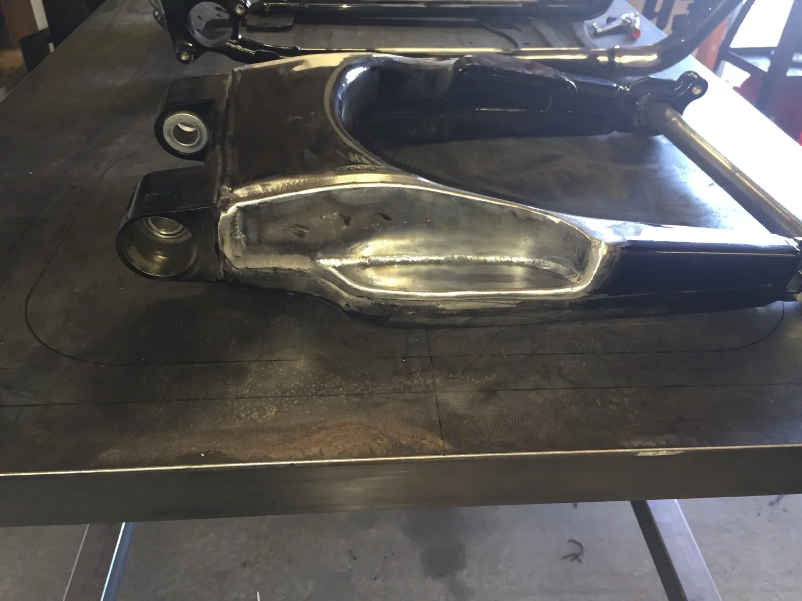
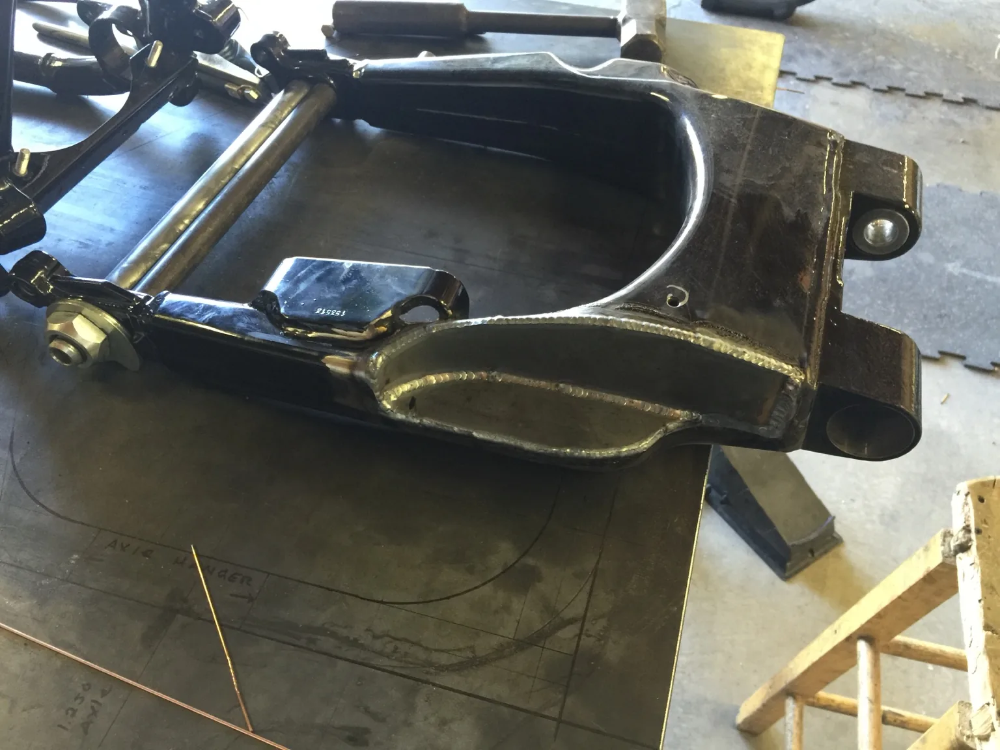
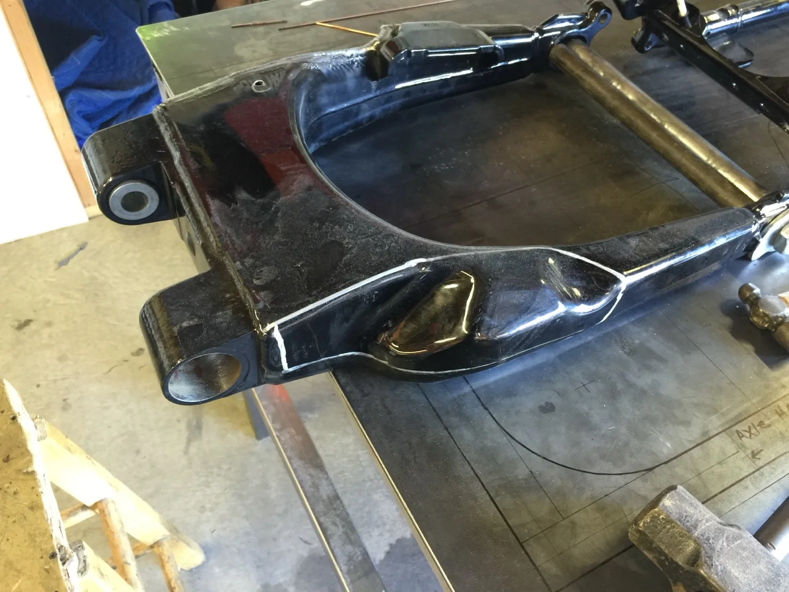
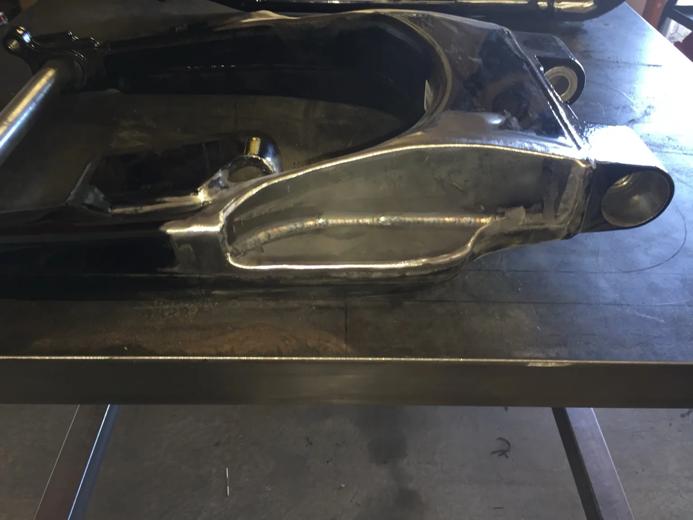
Hayabusa-Powered Sand Rail
Custom Pie-Cut Exhaust
A one-off exhaust system fabricated for a Hayabusa-powered sand rail. The build uses pie-cut sections to route the tubes into the collectors, with a dedicated fixture used to hold flange position, spacing, and geometry during fabrication.
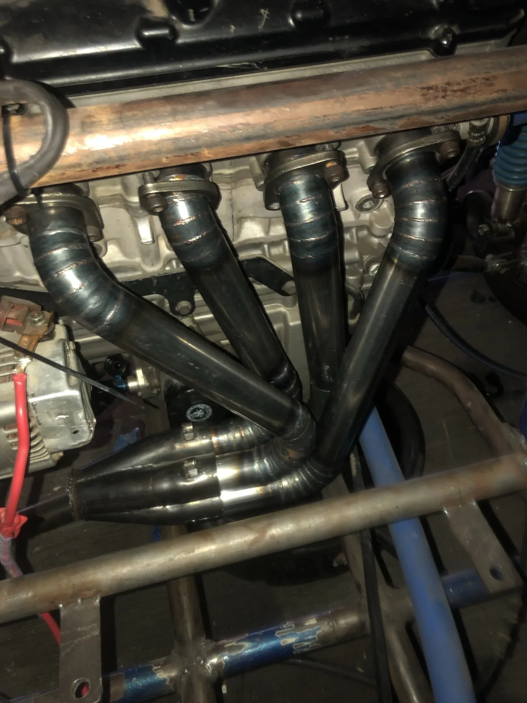
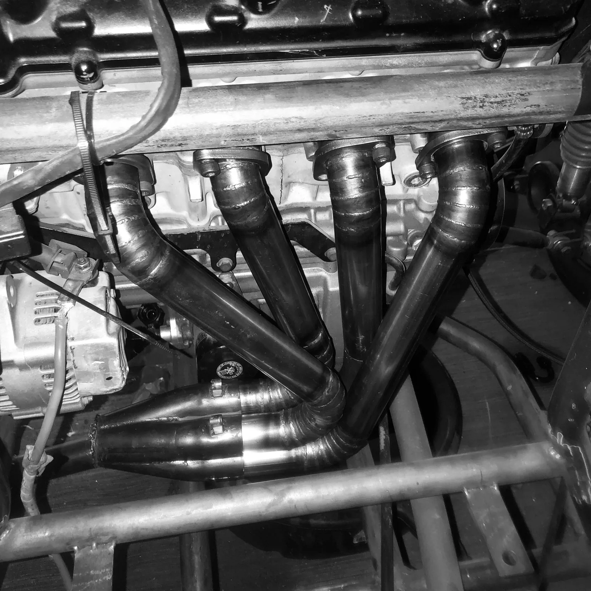
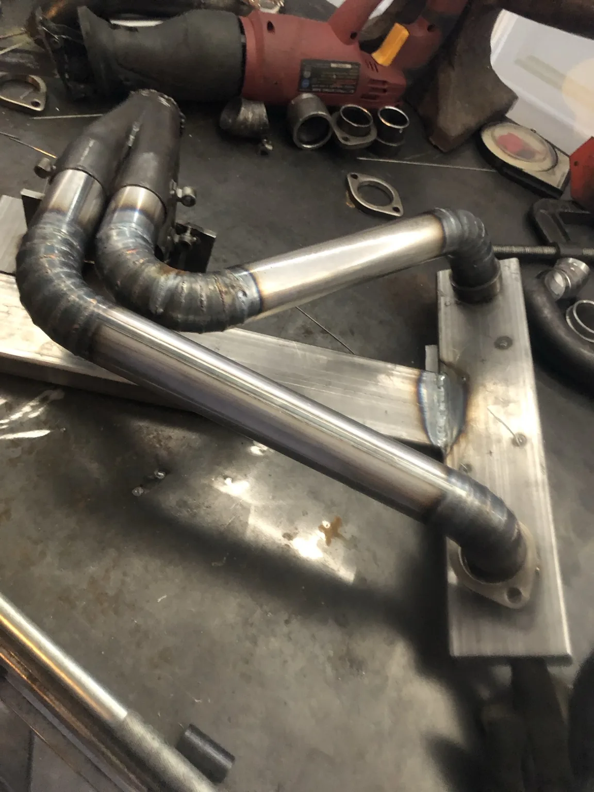
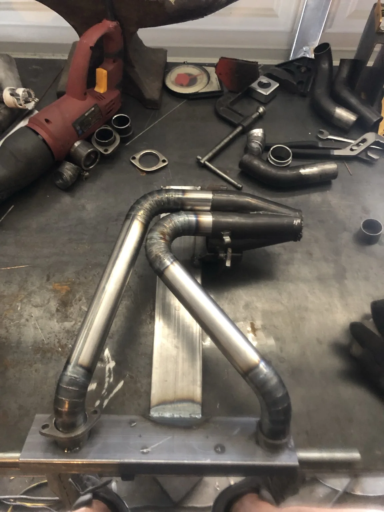
Raked Harley-Davidson • 32" Front Wheel
Custom Chin Spoiler
A custom chin spoiler built around the proportions of a raked Harley-Davidson with a 32-inch front wheel. The progression shows the initial profile and sheet-metal layout, formed and welded construction, metal finishing, and fitment on the motorcycle.
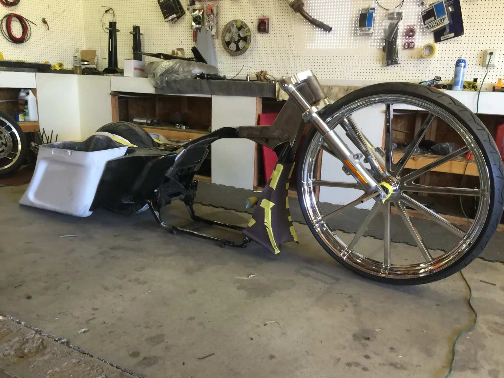
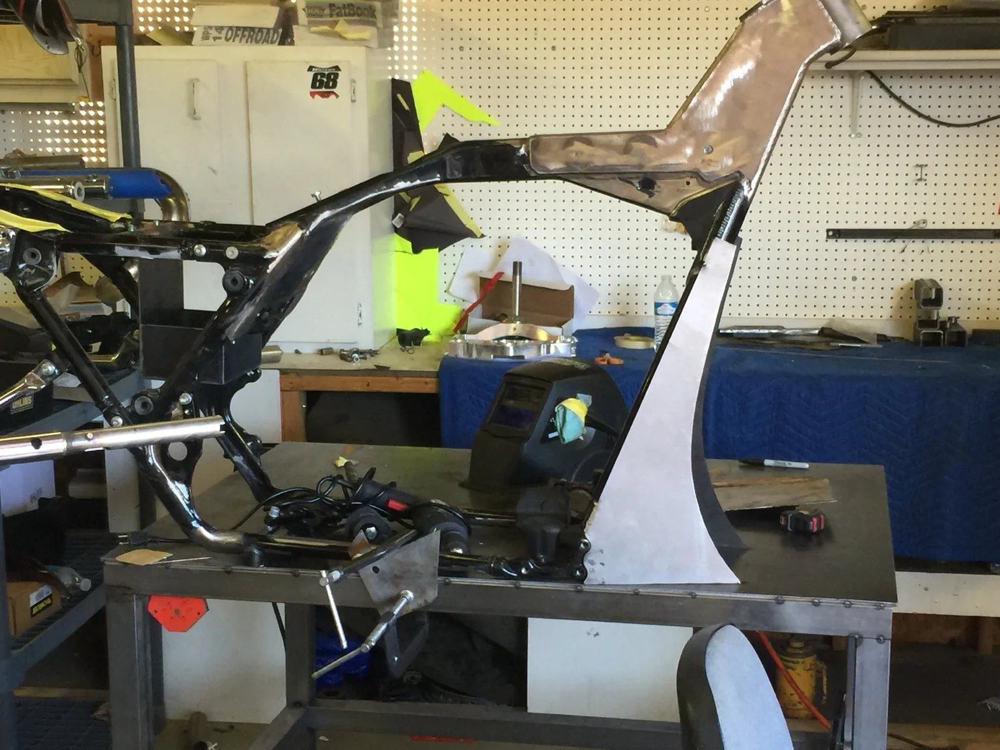
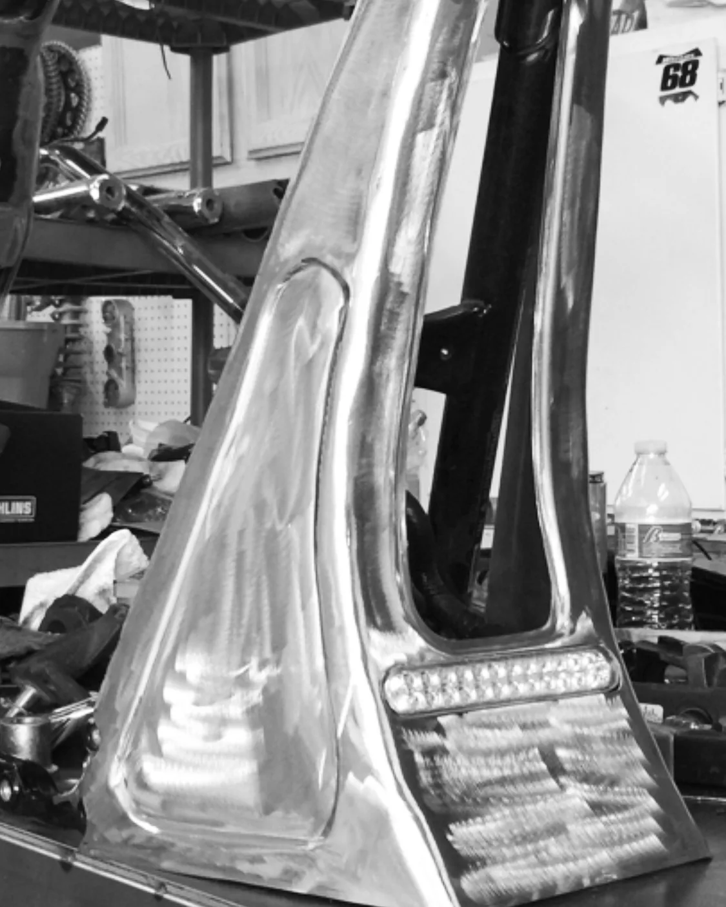
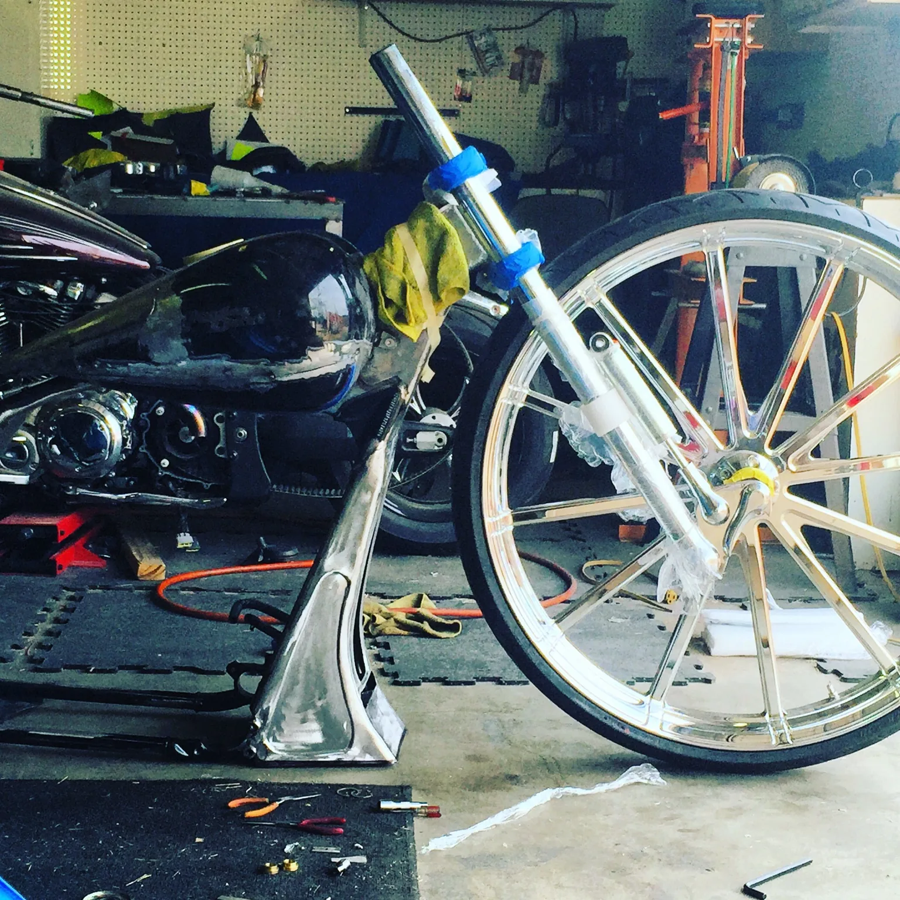